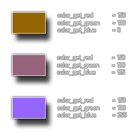

colour_get_blue(col);
| Argument | Description |
|---|---|
| col | The colour to check |
Returns: Real
This function returns the amount of blue used to make the given colour, with the value being between 0 and 255, where 0 is no blue and 255 is all blue. The following image illustrates this: 
b_comp = colour_get_blue(c_teal);
The above code will get the blue component of the colour constant "c_teal" and store the value in the variable "b_comp".